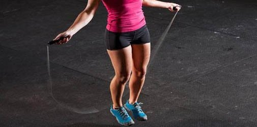
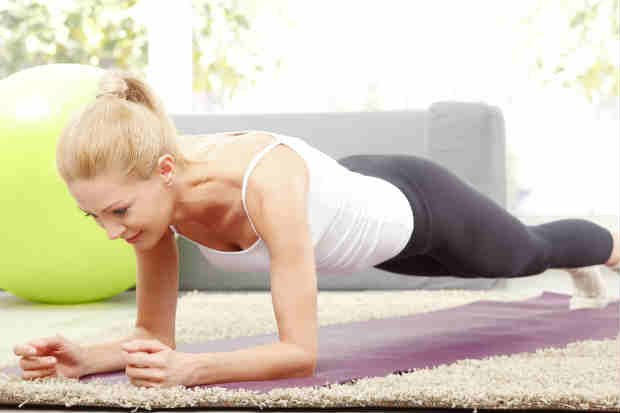
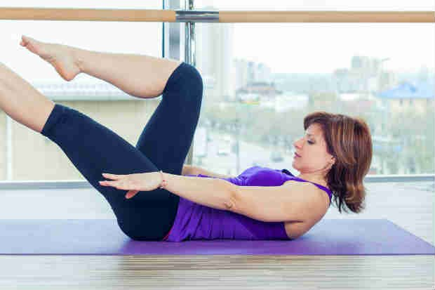
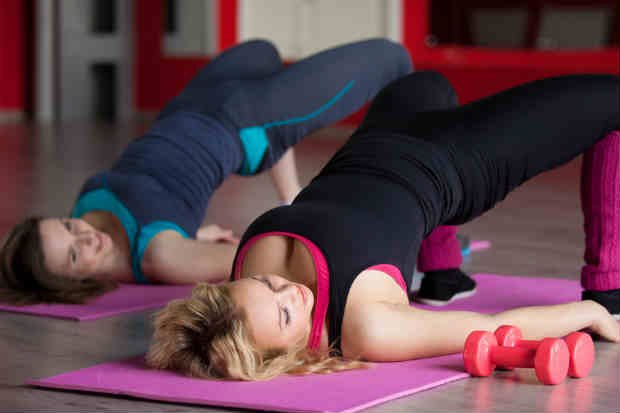
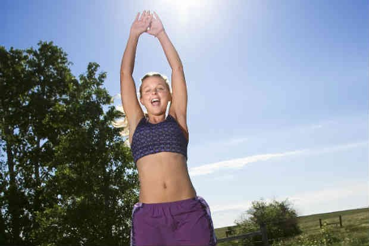
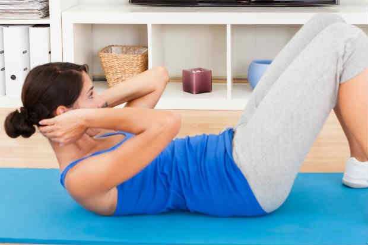

Exercícios para emagrecer: 10 melhores para fazer em casa
Escrito por: Redação • Atualizado em: 29/06/2019
Procurando por exercícios para emagrecer fáceis e rápidos? Saiba que certos exercícios podem te ajudar a perder a barriga sem sair de casa. O objetivo pode ser alcançado alternando exercícios aeróbicos com os que fortalecem a musculatura. E a prática pode proporcionar benefícios que vão além da estética. Isso o porque acúmulo de gordura na região abdominal pode causar problemas cardiovasculares, respiratórios e de postura.
No entanto, antes de começar a fazer os exercícios é importante conversar com o seu médico e verificar se está tudo bem com a sua saúde. Além disso, é fundamental usar roupas adequadas para ginástica e preparar o ambiente para a atividade, pois alguns movimentos necessitam de um espaço maior para serem realizados.
1) Marcha estacionária
Marcha ou corrida estacionária é basicamente simular uma corrida sem sair do lugar. É um bom exercício aeróbico e que ajuda a aquecer o corpo para os próximos movimentos.
Como realizar:
Use um tênis e roupas confortáveis e simule uma corrida sem sair do lugar. Você pode apoiar em uma parede, por exemplo. Também é possível usar um elástico amarrando uma perna na outra para aumentar a intensidade do exercício. É recomendado que no início sejam realizadas cinco séries, com duração de três minutos cada.
Como ajuda a perder barriga:
"Em uma hora de corrida estacionária é possível perder até 600 calorias", diz o especialista e preparador físico Bruno Estêvão, o que contribui para a perda de peso e, consequentemente, da gordura abdominal.
2) Flexão de braço
Flexão de braço é um exercício bastante versátil que pode trazer benefícios tanto para iniciantes quanto para os mais avançados.
Como realizar:
Para não ter problemas e acabar se lesionando enquanto realiza a flexão de braço, é importante tomar cuidado com o posicionamento das mãos, colunas e quadril.
As mãos devem estar alinhadas com o peitoral e abertas de forma que os cotovelos consigam dobrar até 90 graus.
Já os cotovelos devem estar voltados para fora. Tome cuidado para não deixar o quadril muito elevado ou abaixado: ele deve estar na mesma altura do tronco. Os pés podem estar juntos com o corpo todo esticado, ou os joelhos ficam apoiados no chão, facilitando o movimento.
Você pode ver como executar a flexão de braço corretamente neste vídeo:
Como ajuda a perder barriga:
A flexão ajuda a perder barriga pois trabalha diversos músculos, "entre eles os ombros, tríceps, abdômen, músculos dorsais e glúteos", explica Estêvão.
3) Pular corda
Pular corda pode até ter sido uma brincadeira na infância, mas este movimento pode ser divertido e ajudar a perder barriga sem sair de casa também na vida adulta. Mas atenção: por ser um exercício que exige mais condicionamento físico e um pouco de coordenação, inicie devagar e vá aumentando a velocidade e duração desta atividade com o tempo.
Como realizar:
Primeiro escolha um lugar seguro para pular corda. "O ideal para iniciar é intercalar de dois a três minutos de corda com os seus exercícios musculares", diz a personal trainer Fernanda Andrade.
Como ajuda a perder barriga:
Por ser um exercício aeróbico, pular corda ajudará na perda de peso e melhora do condicionamento físico, contribuindo, assim, para queimar a barriguinha saliente.
4) Pranchas
As pranchas são campeãs na hora de perder barriga sem sair de casa. Elas são consideradas um exercício abdominal, que tem diversas formas de ser realizado - o que pode facilitar ou dificultar o exercício.
Como realizar:
Para iniciar a prancha isométrica, coloque as duas mãos paralelas no chão, da mesma forma que a ponta dos pés (que devem estar levemente separados), dividindo o peso do corpo nestes quatro apoios.
O movimento é semelhante a uma flexão, mas aqui você não movimentará o braço - ele deve permanecer esticado com o corpo reto. O trabalho muscular será para se manter na mesma posição.
Após conseguir estabilizar a prancha, pode-se executar o movimento de bicicleta, levando o joelho em direção ao cotovelo contrário (joelho direito no cotovelo esquerdo e vice-versa). É importante nunca deixar o abdômen relaxar para conseguir se manter nesta posição.
Outra forma de fazer a prancha é mantendo a mesma posição, mas com os pés sobre o sofá ou uma cadeira.
"Comece sustentando o corpo por 30 segundos e repita este processo cinco vezes. Aos poucos vá aumentando o tempo de sustentação", orienta Estêvão.
Como ajuda a perder barriga:
Este exercício trabalha a região dos braços e lombar, sem contar que demanda concentração na força empregada no abdômen para conseguir se manter na posição, ajudando a definir a região.
5) Agachamentos
O agachamento é um exercício bastante completo, que ativa grandes grupos musculares com a extensão e flexão do quadril e joelhos, mas é preciso ter cuidado ao realiza-lo. Mas atenção: se feito de maneira incorreta ele pode causar lesões dos joelhos e coluna lombar.
Como realizar
Quando for realizar o agachamento, os pés devem estar paralelos (lado a lado) na mesma direção do quadril. Tome cuidado para não deixar as pernas muito abertas ou fechadas e, na hora de se agachar, o quadril deve ser projetado para trás.
Você pode começar com três séries de dez a doze repetições. Mas, no caso de dor nos joelhos ou nas costas, pare o exercício e procure orientação de um especialista.
Como ajuda a perder barriga:
"O benefício da perda de gordura abdominal é devido ao grande gasto energético; mas por ser um exercício bem completo, ele também age na musculatura do quadril", diz Fernanda. Ou seja, além de ajudar a perder barriga em casa, o exercício ajuda a deixar o bumbum durinho.
6) Bicicleta no ar
A bicicleta no ar é uma variação de exercício abdominal que combina uma flexão de tronco e quadril com uma rotação de tronco.
Como realizar:
Deite com as costas apoiadas no chão ou colchonete, levante as pernas sem tirar as costas do chão e simule pedalar em uma bicicleta com os pés para cima. Com as mãos atrás da cabeça, tente alcançar o joelho direito quando ele estiver mais perto do abdômen e repita o procedimento quando o esquerdo estiver mais próximo.
Tente ficar neste exercício mais ou menos o mesmo tempo que utilizou nos demais aeróbicos, tomando sempre cuidado com a coluna.
Como ajuda a perder barriga:
"Seu benefício é tonificar a musculatura do abdômen melhorando a aparência, além de aumentar o poder de queima da gordura", afirma Welber Bedin, da rede Just Academias.
7) Elevação do quadril
A elevação de quadril, com a pessoa deitada, ajuda a perder barriga e é fácil de fazer mesmo em ambientes apertados.
Como realizar:
Deitado no chão ou sobre um colchonete, deixe os braços alinhados ao lado do corpo, deixe os joelhos flexionados e as solas dos pés completamente apoiadas no chão. Depois eleve o quadril, em direção ao teto. "Para começar a fazer este exercício, realize três séries com 10 a 14 repetições cada uma", diz Fernanda
Como ajuda a perder barriga:
A personal trainer explica que este movimento, dentro de um circuito de exercícios, fortalece os músculos do quadril, glúteos e abdômen, além de ter um gasto energético elevado, o que contribui para o emagrecimento como um todo.
8) Polichinelo
O polichinelo é um exercício que ajuda a aquecer o corpo rapidamente e demanda um pouco de coordenação e condicionamento físico. Nos primeiros momentos do exercício já é possível sentir como ele afeta o corpo todo e, por demandar um trabalho cardiovascular maior, ele também tem um grande gasto calórico.
Como realizar:
O polichinelo se realiza unindo as mãos sobre a cabeça enquanto se afasta os pés e unindo os pés quando se abaixa as mãos até tocar os lados do corpo. O movimento se repete e para poder mover os dois pés ao mesmo tempo, acrescenta-se pequenos pulos (para juntar e afastar os pés).
Estêvão recomenda que os iniciantes neste exercício façam 50 repetições ou um minuto do exercício sem parar. Pode-se repetir essa série cinco vezes para aumentar o condicionamento.
Como ajuda a perder barriga:
"O benefício é a capacidade elevada do trabalho cardiovascular podendo substituir a esteira ou a bicicleta como trabalho aeróbico", diz Bedin.
9) Abdominais
Existem diversos tipos de abdominais que podem ajudar a perder a barriga sem sair de casa. Mas é importante tomar cuidado com a coluna e a realização do exercício, além de parar caso sinta dores na região das costas quando estiver fazendo o movimento e procurar orientação de um especialista.
Como realizar:
Deite no chão, sobre um tapete ou colchonete, dobre os joelhos e deixe os pés paralelos com a sola tocando o chão. Para o abdominal mais simples, coloque as mãos atrás da cabeça e levante o tronco, tentando fazer com que a cabeça toque no joelho. Cuidado para não tirar a lombar do solo.
Também é possível repetir o movimento fazendo a rotação de tronco, com o intuito de que o cotovelo esquerdo toque o joelho direito e vice-versa.
Ainda existe o abdominal oblíquo, em que deitada sobre o lado direito do corpo a pessoa apoia o braço e a perna no colchonete, e faz movimento lateralmente para que o seu joelho esquerdo encoste no cotovelo esquerdo. Depois troca-se o lado. "Este abdominal é tão importante quanto o reto, pois fortalece a região lateral do tronco, ajuda a definir o abdômen e deixa o corpo mais estabilizado", diz Bruno.
Ele recomenda que sejam realizadas cinco séries de 30 repetições de cada lado, mas caso sinta dores na coluna ou pescoço, pare o exercício e procure orientação de um especialista.
Como ajuda a perder barriga:
"Exercícios de contração muscular servem para tonificar os músculos, mas é sabido que quanto mais treinado o músculo, mais gordura ele pode queimar", diz Welber Dedin, da rede Just Academias.
10) Burpee
O burpee é mais avançado, tem alta intensidade e irá trabalhar tanto a parte muscular quando a aeróbica em conjunto.
Como realizar:
O movimento começa com um agachamento, seguido de um rápido movimento para colocar as mãos no chão e "chutar" os pés para trás, parando na posição de flexão. Feita a flexão, puxe as pernas de volta para a posição de agachamento e eleve o tronco. Finalize com um salto com as mãos estendidas para o alto. A ideia é que ele seja realizado em sequência, não parando após a realização de um movimento para iniciar outro.
"Comece executando o movimento cinco vezes seguidas e vá progredindo. Você pode fazer oito séries de cinco repetições", diz Estêvão.
Como ajuda a perder barriga:
Este exercício tem um alto índice de queima de calorias e trabalha a musculatura de todo o corpo.
"Os músculos do peitoral são trabalhados na flexão de braço; quadríceps, glúteos e panturrilha no agachamento e salto; os do abdômen e flexores do quadril e lombar na sustentação, flexão, agachamento e nos movimentos de levar as penas para frente ou para trás", exemplifica o especialista.